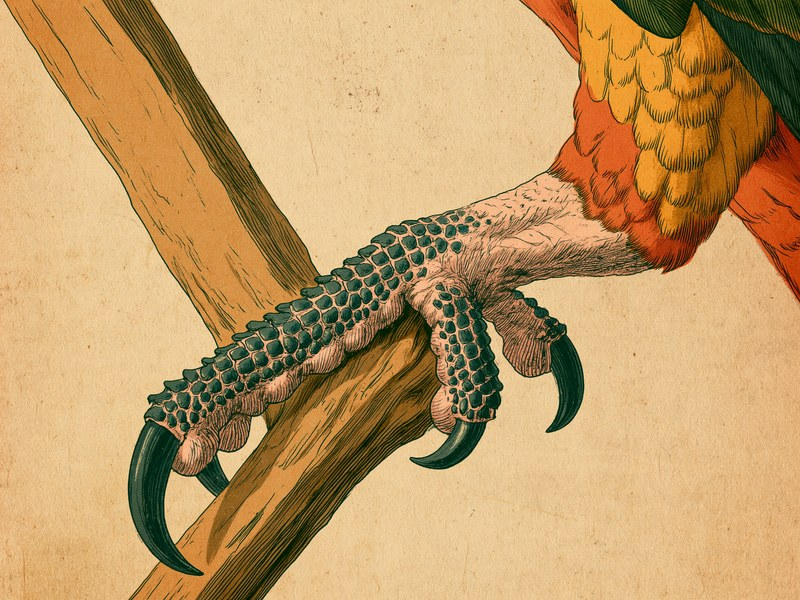

インコや文鳥の小さな体には、犬や猫とはまったく違う「しくみ」がいくつも詰まっています。枝を握りながら片足で食べ物を持てる足、年に何度も生え変わる羽、人には見えない光まで感じ取る目——それぞれの特徴を知っておくと、毎日のお世話で「なぜこれが大事なのか」が腑に落ちるようになります。 Companion birds are built very differently from dogs and cats. Their feet can grip a perch and hold food at the same time, their feathers are replaced several times a year, and their eyes see a world far wider and more colorful than ours. Understanding these traits makes everyday care far easier to get right.
足指は前2本・後ろ2本:枝を握りながら「片手で食べる」対趾足
インコやオウムの足をよく見ると、指の並び方が少し変わっていることに気づきます。前に2本、後ろに2本。この配置は「対趾足(たいしそく)」と呼ばれ、前後から挟み込むように木の枝を握れるのが特徴です。握る力が強く、しっかりと枝にとまっていられます。
この足のつくりが生み出すのが、インコらしいあの仕草です。片足で枝を掴んだまま、もう片方の足で食べ物を持ち、くちばしに運んで食べる。人間でいえば「手で食べる」ような動作を、鳥は足でやってのけるのです。
飼育の場面でこれが意味するのは、「握る」ことが鳥にとって日常の基本動作だということ。止まり木や足元は、鳥が自然に握れる環境かどうかという視点で見てあげると、体のしくみに沿ったお世話になるでしょう。片足で器用に食べ物を持つ姿が見られたら、それは対趾足がしっかり働いている証拠でもあります。
出典: inko.exp.jp(対趾足のつくり・片足で食べ物を持つ動作) inko.exp.jp / inko.exp.jp(インコの体のつくり) inko.exp.jp
羽は年に何度も生え変わる:「雛換羽」と「季節性換羽」
鳥の羽は一生同じものが付いているわけではなく、定期的に抜けて新しい羽に生え変わります。これを「換羽(かんう)」と呼びます。換羽には大きく2種類あって、ひとつは幼いころに一度だけ起きる「雛換羽」。もうひとつは、成鳥になってから季節の変わり目に繰り返し起きる季節性の換羽です。
知っておきたいのは、換羽の時期には行動にも変化が出ることです。新しい羽を作るには体力を使うため、いつもより元気がなくなったり、眠りがちになったりすることがあるとされています。「急にじっとしている時間が増えた」というとき、まずカレンダーを見て「換羽の季節かな」と考えてみるのはひとつの手です。
ただし、元気がない・食べ方が変わったという変化は、後で触れるように体調不良のサインと重なることもあります。「換羽だから大丈夫」と決めつけず、抜けた羽の様子や食欲もあわせて観察しておくと安心です。
出典: inko.exp.jp(雛換羽・季節性換羽の時期と換羽中の行動変化) inko.exp.jp
視野は約330度、しかも紫外線が見える:人とは違う「見え方」
インコの視野はとても広く、その範囲は約330度に達するとされています。人間が前を向いたまま背後を見ることはできませんが、約330度という数字からすると、インコは真後ろに近いところまで視界に入れていることになります。
もうひとつ驚くのが色の見え方です。人間の目が感じ取れるのは赤・緑・青の3色ですが、インコはそれに加えて紫外線も知覚できる「四色覚」を持つとされています。私たちには同じ色に見える羽や餌が、インコの目には別の色合いで映っているのかもしれません。
接し方のヒントとしては、「こちらが思っている以上によく見えている」と考えておくとよさそうです。後ろから近づいたつもりでも鳥にはしっかり見えていますし、ケージ越しの人の動きも意外なほど把握されているはず。急な動きで驚かせないよう、ゆっくりと動くことが、鳥の目のしくみに沿った付き合い方といえるでしょう。
出典: inko.exp.jp(視野約330度・四色覚) inko.exp.jp / inko.exp.jp(インコの体のつくり) inko.exp.jp
群れで暮らし、声で伝える:鳥はもともと「ひとりが苦手」
飼い鳥の多くは、野生ではにぎやかな群れのなかで暮らしている生きものです。たとえばオカメインコは、野生下では大きな群れをつくって行動しています。仲間の気配が常にそばにある、というのが本来の環境なのです。
群れで暮らす鳥にとって欠かせないのが、声によるやりとりです。文鳥は、鳴き声の種類を使い分けることで気持ちや意思を伝えているとされています。同じ「ピッ」に聞こえても、鳥どうしにはちゃんと違う意味が届いているのでしょう。
この特徴は、家庭で一羽だけ飼うときの接し方にそのまま関わってきます。群れで暮らすはずの鳥にとって、飼い主は仲間の代わりでもあります。声をかける、姿が見える場所にいる、そんな小さなことが、鳥にとっては「群れの気配」になっている可能性があります。逆に、長い時間ひとりきりになる暮らしは、鳥の本来の性質からは遠いということも心に留めておきたいところです。
出典: 山口大学農学部・早崎峯夫氏の資料(オカメインコの野生下での群れ行動) petit.lib.yamaguchi-u.ac.jp / アニコム損保(文鳥の鳴き声によるコミュニケーション) anicom-sompo.co.jp
弱った姿を隠そうとする:「ささいな変化」が大事な理由
鳥の体の特徴として、最後にどうしても知っておいてほしいことがあります。鳥には、弱った姿を隠そうとする習性があるのです。これは鳥類専門の動物病院が診療案内のなかで明記していることで、そのうえで、いつもより食べ方が少ない、呼吸音が荒いといった、ささいな変化を感じた時点で早めに診察を受けるよう呼びかけています。
なぜ隠すのか、その理由については「野生では弱った個体が捕食者に狙われやすいため、元気なふりをするのではないか」と考えられています。この理由づけに触れているかどうかは動物病院によって差があり、すべての病院が同じように説明しているわけではありません。理由はどうあれ、「具合が悪くても見た目には分かりにくい」という点が、飼い主にとっての要注意ポイントになります。
つまり鳥の場合、「見るからにぐったりしている」段階まで待ってはいけない、ということです。食べる量や呼吸の音をはじめ、毎日の観察のなかで「いつもと少し違う」を拾えるかどうかが、鳥と長く暮らすためのいちばんの備えになります。この記事では体の特徴として触れるにとどめ、具体的な病気のサインは別の機会に譲りますが、「鳥は弱っていても隠す」という一点だけは、飼う前にぜひ覚えておいてください。
出典: 鳥類専門動物病院(池袋)の診療案内(弱った姿を隠す習性・ささいな変化での早期受診の呼びかけ) birdpro.co.jp(隠す理由についての進化的な説明は同院の記事には含まれておらず、本記事では飼育者のあいだの解釈として紹介しています)
羽が季節の変わり目に生え変わる「換羽」の話をしましたが、季節ごとに体の表面が入れ替わるのは鳥だけではありません。犬や猫にも秋にごっそり毛が抜ける「換毛期」があります。鳥の羽と犬猫の毛、どちらも季節の変わり目に体が衣替えをしているというわけです。犬猫側の事情は犬や猫はなぜ秋にごっそり毛が抜けるの?で紹介しています。
ミニクイズ:インコの足の指は、人の手のように前に4本並んでいる?(タップして答えを見る)
こたえ×。インコやオウムの足指は前に2本、後ろに2本の「対趾足」です。前後から挟み込むように枝を握れるため握る力が強く、片足で枝を掴んだまま、もう片方の足で食べ物を持って食べることができます。